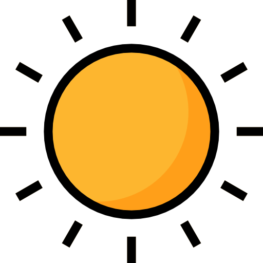
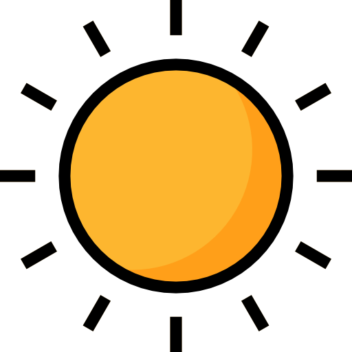
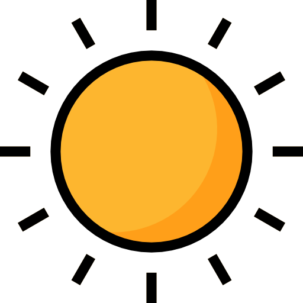

Paris is the capital and largest city of France. With an official estimated population of 2,102,650 residents in January 2023 in an area of more than 105 km2 (41 sq mi),
Paris is the fourth-largest city in the European Union and the 30th most densely populated city in the world in 2022.
Since the 17th century, Paris has been one of the world's major centres of finance, diplomacy, commerce, culture, fashion, and gastronomy.
For its leading role in the arts and sciences, as well as its early and extensive system of street lighting, in the 19th century, it became known as the City of Light.
巴黎是法國的首都和最大城市。官方估計，2023 年 1 月巴黎面積超過 105 平方公里（41 平方英里）的居民人口為 2,102,650 人，
是歐盟第四大城市，2022 年將成為全球人口稠密城市第 30 位。世界主要的金融、外交、商業、文化、時尚和美食中心之一。
由於其在藝術和科學領域的領先地位，以及早期和廣泛的街道照明系統，在 19 世紀，它被稱為“光之城”。
凱旋門，法語：Arc de triomphe de l'Étoile，位於法國巴黎十七區的戴高樂廣場中央，是拿破崙為紀念1805年奧斯特利茨戰役打敗俄奧聯軍，於1806年下令修建而成的。拿破崙被推翻後，凱旋門工程中途輟止。1830年波旁王朝被推翻後又重新復工，到1836年終於全部竣工。門上刻有法國大革命戰爭及拿破崙戰爭期間660名法國將領與158場戰役。
羅浮宮，法語：Palais de Louvre，位於法國巴黎市中心的塞納河邊，原是建於12世紀末至13世紀初的王宮，現在是一所綜合博物館，當前自1946年開始，羅浮宮除了在週二公休和特殊假日外，通常向遊客全面開放參觀，內部允許使用照相機和錄像機，但禁止使用閃光燈
塞納河（法語：Seine，是流經巴黎市中心的法國第二大河，全長780公里，流域面積7.8萬平方公里，平均流量500立方公尺每秒（18,000立方英尺每秒）。跨越它的大橋有亞歷山大三世橋、新橋、藝術橋、阿爾馬橋、比爾哈凱姆橋、耶拿橋等。周杰倫的"告白氣球"就是在塞納河取景
法語：Tour Eiffel，艾菲爾鐵塔是在1889年建立，天線高24公尺，總高324公尺。建造艾菲爾鐵塔的初衷是為了紀念法國大革命100周年和迎接在巴黎舉辦的國際博覽會。自1887年到1931年紐約帝國大廈落成前，保持了45年世界最高建築物的地位，目前仍是巴黎最有名的地標。 在建成之初，這座造型奇特的金屬龐然大物曾經引起法國人的反對。時光流逝，當年的反對之聲已經消散在歷史的塵囂中，如今的艾菲爾鐵塔是巴黎的絕對地標，法蘭西的驕傲。

Trois allumettes une à une allumées dans la nuit
La premiére pour voir ton visage tout entier
La seconde pour voir tes yeux
La dernière pour voir ta bouche
Et l'obscuritè tout entière pour me rappeler tout cela
En te serrant dans mes bras.
(translation:
Three matches one by one struck in the night
The first to see your face in its entirety
The second to see your eyes
The last to see your mouth
And the darkness all around to remind me of all these
As I hold you in my arms.)